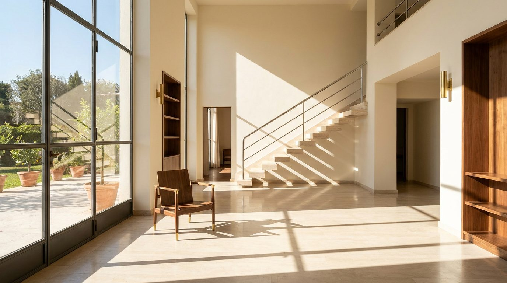

Atlante · IT-04 · Italia · Nord
Villa razionalista anni '30
Esempi · esterno e interno


Architettura · elementi riproducibili
- volumi netti, intonaco bianco-avorio, zoccolo e soglie in pietra
- serramenti in acciaio a filo muro e grandi vetrate angolari
- altezza 3,2-3,6 m
- pavimenti in marmo lucido a lastre rettangolari o parquet a spina di pesce
- scala a sbalzo con ringhiera tubolare
- dettagli in noce e ottone
- camino in pietra
- Proporzione: stanze regolari, luce che entra da un solo lato lungo.
Luce
vetrate a sud-ovest sul giardino, luce piena e ombre nette; il set va costruito in controluce laterale per far leggere i volumi.
Prompt di generazione (EN)
1930s Italian rationalist villa interior, 3.4 m ceiling, ivory plaster walls, steel-framed floor-to-ceiling windows, polished marble slab floor, floating travertine stair, walnut and brass details, hard afternoon sun from the garden side casting crisp geometric shadows, 28 mm at 1.3 m.